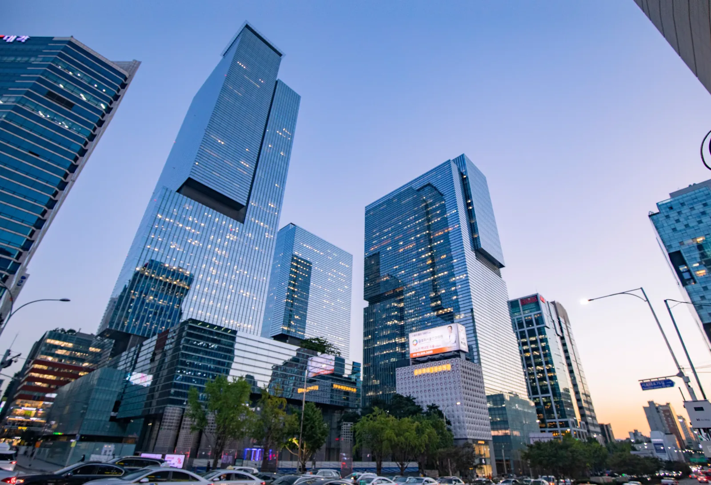
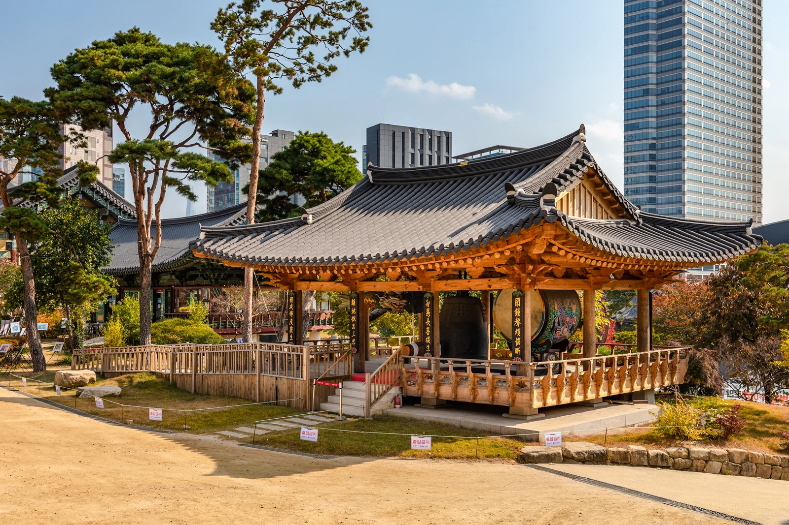
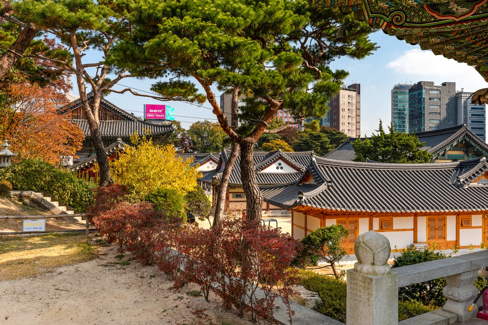
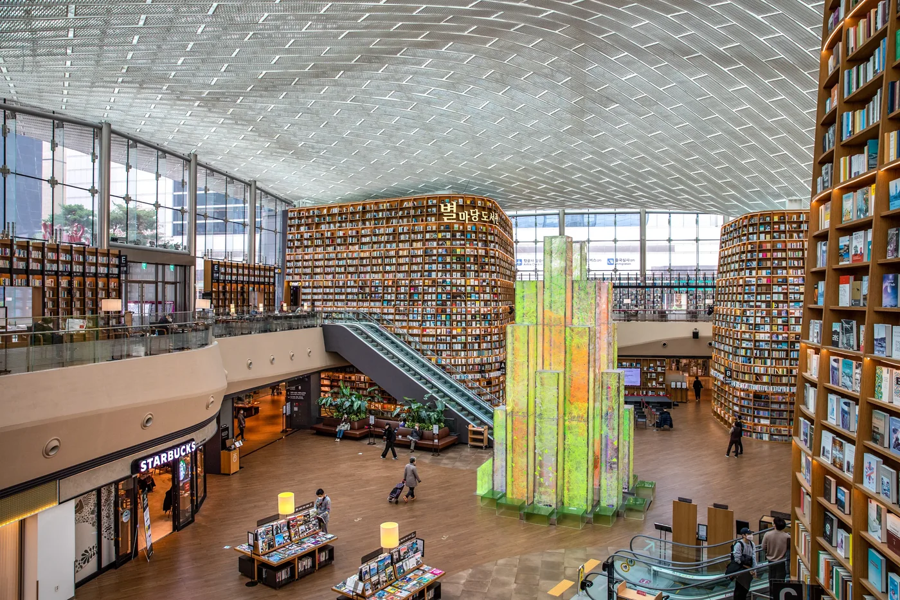
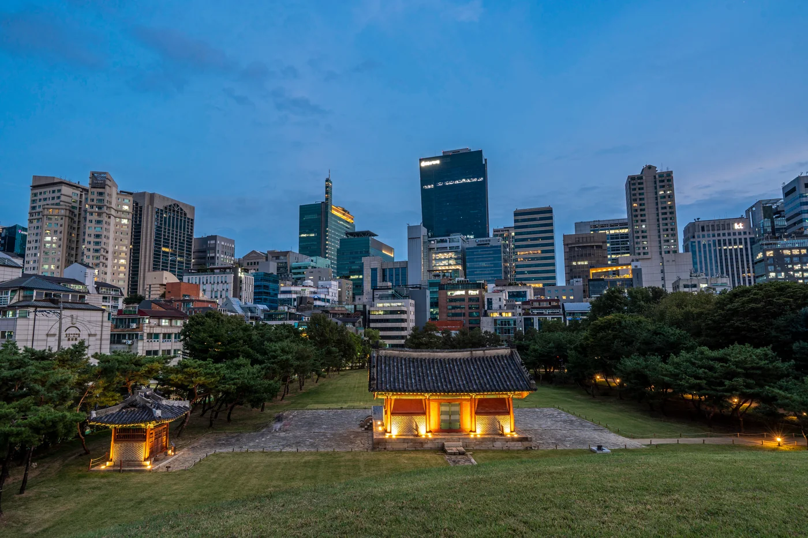
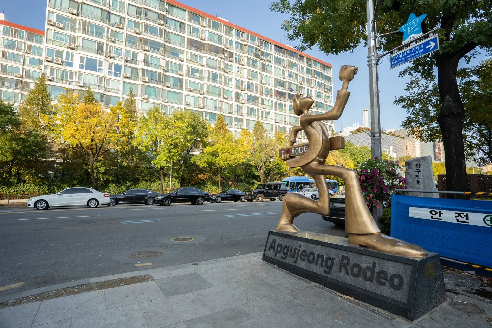
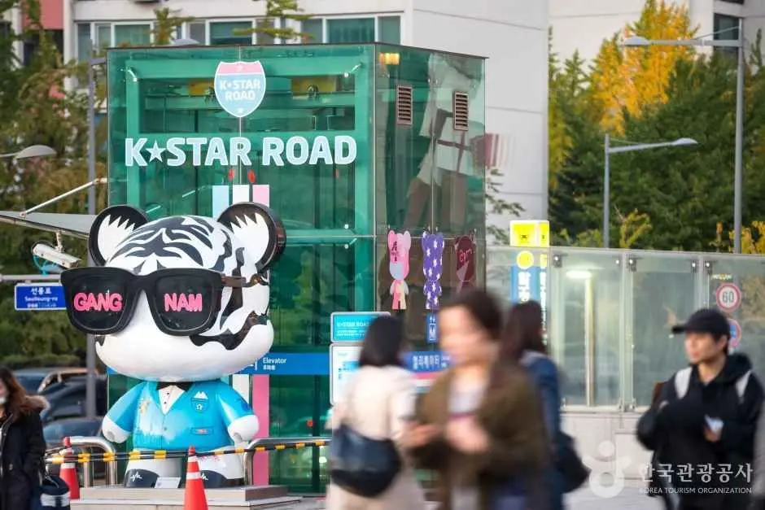
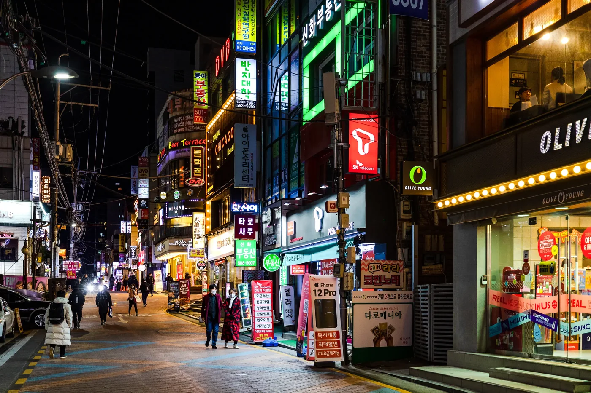

江南旅遊指南 2026
江南很有名，許多旅客還沒想清楚到這裡要做什麼，就已經對它有一套想像。

首先要了解的是地理位置。
江南站、COEX、奉恩寺、狎鷗亭、島山公園與清潭，不是同一個緊密相連的觀光街區。它們分布在這個大區的不同位置，主要遊覽區之間通常要搭地鐵、公車或計程車。
第一次來，最清楚的路線是：
奉恩寺 → COEX／Starfield Library → 宣靖陵 → 江南站晚餐與夜間行程
如果你過江是為了韓國時尚、K-pop、設計或特定咖啡廳，就用另一條路線：
島山公園 → 狎鷗亭羅德奧街 → K-Star Road → 清潭
多數旅客不需要一天把兩條都走完。
第一次來首爾若只有三四天，而且重點是景福宮、北村、仁寺洞、鍾路與其他市中心或歷史區域，江南可以留到下次。這裡有符合你來首爾目的的事物時，才最值得安排。

照片：Seoul Tourism Organization · KOGL Type 1
江南實際上是什麼樣子
「江南」常被籠統地用來稱呼首爾南側。本指南聚焦江南區，以及自然屬於這一帶的遊覽區域。
這點很重要，因為許多首爾行程把江南範圍擴大到 Lotte World、石村湖、盤浦大橋與首爾藝術殿堂。它們可以安排在同一趟旅行，但若當成同一個街區，就很難排出順暢的江南一日遊。
在 COEX 與三成一帶，空間尺度很大：會展館、購物、Starfield Library，以及繁忙的室內空間。馬路對面的 奉恩寺 則幾乎立刻讓步調慢下來。再往西， 宣靖陵 讓你在現代首爾辦公區中，看見朝鮮王陵與林蔭步道。
在 島山公園、狎鷗亭羅德奧街與清潭一帶，造訪理由轉為韓國時尚、設計、咖啡廳、藝廊、K-pop 與較高價位的購物。
江南站 又有另一種角色。這裡更適合當晚間街區，逛地下街、吃晚餐、喝咖啡、去酒吧或唱歌，而不是每條江南路線的起點。
重要的決定，不是能收集多少江南景點。
而是江南的哪一部分值得你花時間。
先選適合你的江南
第一次來，興趣多元
從這條路線開始：
奉恩寺 → COEX → 宣靖陵 → 江南站
這個順序讓你看到江南四種不同面貌：寺廟、現代商業首爾、王室歷史，以及熱鬧的晚間區域。
如果只有三四小時，就拿掉宣靖陵。
韓國時尚、設計或 K-pop
可以走：
島山公園 → 狎鷗亭羅德奧街 → K-Star Road → 清潭
當你本來就喜歡韓國品牌、咖啡廳、藝廊、K-pop、美妝或某家餐廳時，這條路線才有安排的理由。
晚餐、購物與深夜活力
直接去：
江南站／新論峴
不必先在那裡耗一個下午。下班時間到、晚餐人潮出現後，這一帶會更有意思。
以上都不符合你的旅程
江南可以不排。
尤其是第一次來首爾、停留又短的時候。
路線 1 — 初訪江南
奉恩寺 → COEX／Starfield Library → 宣靖陵 → 江南站
這條路線走得通，因為每一站都改變當天的體驗，不是重複同類景點。
1. 從奉恩寺開始
奉恩寺位於首爾最大的商業與會展複合區之一旁邊。這種對比，就是從這裡開始的理由。
寺廟仍有日常佛教活動。走走寺院、看看殿堂，也要體諒其他人可能是來祈禱，而不是觀光。
對多數旅客來說， 45–60 分鐘 就足以完成第一次造訪；除非參加活動，或想享受更悠閒的上午。
接著在同一個三成區域內走進 COEX，不必把前半天花在搭車。

照片：Seoul Tourism Organization · KOGL Type 1
2. 進 COEX 前，先想好目的
COEX 可以短暫逛一下，也可以占去大半個下午。
進去前先決定：
- Starfield Library＋附近走走： 短暫停留
- 圖書館＋午餐＋購物： 中等停留時間
- COEX Aquarium： 較長的家庭／室內行程
- 會議或展覽： 以活動作為當天主軸
Starfield Library 免費入場，已經在 COEX 時很適合順訪。它高達 13 公尺的書架，是多數旅客熟悉的視覺地標。
圖書館本身可以很快看完。真正讓 COEX 停留拉長的，是購物、午餐、展覽或水族館。

照片：Korea Tourism Organization · KOGL Type 1
3. 跨區移動前，先解決午餐
在 COEX 吃午餐很實用，因為不用再繞路。
有收藏的餐廳可以去；沒有的話，就找方便的地方吃，讓路線繼續前進。
除非美食是江南行程的主要原因之一，否則這一餐不必變成另一個專程前往的目的地。
4. 完整路線加入宣靖陵
宣靖陵包含成宗、貞顯王后與中宗的王陵，是 UNESCO 世界遺產「朝鮮王陵」的一部分。
離開 COEX 後，體驗完全不同：林蔭步道、陵寢與安靜景觀，四周卻是現代首爾。

照片：Seoul Tourism Organization · KOGL Type 1
初次造訪可預留約 45–60 分鐘 的時間。
宣靖陵目前週一休園。 週一，或 COEX 已經比預期花更多時間時，就略過它，繼續往江南站。
開放與入場時間可能變動，出發前請再次確認官方資訊。
5. 在江南站結束當天行程
晚一些到江南站，更容易感受這一帶的特色。
地下購物街適合輕鬆逛平價服飾與美妝。回到地面，往新論峴方向的街道則有餐廳、咖啡廳、酒吧與唱歌場所。
在這裡吃晚餐，再決定是否繼續夜間行程。
一間咖啡廳、一場包廂唱歌，或再走走小街，可能就夠了。大家都累了，不必勉強待到深夜。
建議時間安排 — 完整路線
實際可行的大綱：
- 10:00 — 奉恩寺
- 11:00 — COEX／Starfield Library
- 12:30–13:30 — COEX 附近午餐
- 14:00 — 繼續逛 COEX，或往下一站
- 15:00–16:00 — 宣靖陵
- 接近傍晚 — 往江南站移動
- 晚間 — 地下街購物、晚餐，再做仍有興趣的事
順序比精確時刻更重要。
購物、逛水族館、參加會展或一頓較長的午餐，都很容易多花一兩小時。
精簡版 — 約 3 到 4 小時
可以走：
奉恩寺 → COEX／Starfield Library → 江南站晚餐
宣靖陵是優先刪減的一站。
加入 COEX Aquarium
把水族館當成完整活動，不是順便加上的 20 分鐘。
可以把宣靖陵留到別天，或接受這會變成較長的江南行程。
路線 2 — 江南時尚、設計與 K-Pop
島山公園 → 狎鷗亭羅德奧街 → K-Star Road → 清潭
這條路線適合比起 COEX，更在意當季韓國時尚、咖啡廳、設計、K-pop 或特定購物目的地的旅客。
依購物、喝咖啡或是否留下吃晚餐，可以花半天，也可以逛大半天。
1. 從島山公園附近開始
島山公園紀念獨立運動家與教育家安昌浩。
在這條行程裡，它也提供了一個安靜、容易定位的起點，再走進狎鷗亭較密集的商業街道。
除非對紀念設施本身有興趣，否則在公園短暫散步就夠了。周邊島山一帶，則是路線開始轉向韓國旗艦店、美妝、咖啡廳與設計的地方。
2. 依興趣調整狎鷗亭羅德奧街的停留
如果店鋪本來就是你來的原因，狎鷗亭羅德奧街很值得慢慢逛。
追韓國時尚品牌的旅客，可能待上好幾小時；對購物興趣不大的人，則可以更快走過。
挑幾家真正有興趣的店鋪或咖啡廳，再留空間給街上發現的地方。社群清單若讓你整天反覆折返，就會變得沒效率。

照片：Korea Tourism Organization · KOGL Type 1
3. K-Star Road 留給有興趣的粉絲
K-Star Road 從狎鷗亭羅德奧一帶延伸到清潭，沿路有與 K-pop 團體相關的 GangnamDol 公仔。
粉絲有明確理由留意它；對 K-pop 沒興趣的旅客，則可以把它當成往清潭散步的一部分。

照片：Korea Tourism Organization · IR Studio · KOGL Type 1
對娛樂公司大樓，則要抱持不同期待。部分公司仍在江南，但辦公室是工作場所，不會只因公司有名，就提供公開參觀或開放大廳。
當期展覽、粉絲活動、周邊商品空間或其他公開活動，才是更值得調整行程的理由。
4. 清潭有真正想去的地方，再繼續往前
到了清潭，行程需要更有選擇。
這裡適合精品旗艦店、藝廊、高價位餐飲、美妝預約與部分 K-pop 相關興趣，但不是每個人都必須去。
有特定品牌、藝廊、餐廳、預約或粉絲目的地時，再待久一些。
否則，在狎鷗亭結束也很合理。
現在怎麼安排林蔭道
林蔭道仍有商店、咖啡廳與韓系美妝店家，首爾官方觀光資訊也仍將它列為江南購物區。
Korea Inside 不把它視為主要時尚路線中自動必排的一站。
如果已有特定咖啡廳、店鋪、美妝預約或其他到新沙的理由，再加入。沒有這些理由時，本指南中的島山／狎鷗亭一側有更清楚的安排目的。
這是編輯上的優先順序，不是說林蔭道已經消失。零售街區變化很快，兩邊的吸引力也可能再次改變。
入夜後的江南站
江南站是首爾主要聚會與商業區之一，但對它白天的印象，可能讓旅客誤判逛法。
如果想逛平價服飾或美妝，就先從地下街開始。
再回到地面吃晚餐。往新論峴方向的街道，有輕鬆吃的餐廳、韓式烤肉、咖啡廳、酒吧、唱歌場所與宵夜。

照片：Seoul Tourism Organization · KOGL Type 1
對多數旅客，晚餐加一站晚間活動就夠。
如果主要想去夜店，接近出發日期再確認目前店家。夜生活場所變動太快，舊的「最佳夜店」固定清單未必可靠。
江南購物 — 依想買的東西選區域
先想要買什麼，再選江南哪一區，會逛得更順。
平價／休閒
江南站地下購物街
適合輕鬆逛服飾與美妝，不必為一家店橫越城市。
韓國時尚／當季品牌
島山／狎鷗亭
如果韓國品牌、旗艦店與當前零售文化是旅程的一部分，這條路線更合適。
精品／藝廊
清潭
已有想去的品牌、藝廊、餐廳或高價位購物體驗時，值得留時間。
大型室內購物
COEX
行程本來就在三成，或天氣讓你需要轉往室內時，這是實用的選擇。
只是稍有興趣的店，很少值得你橫越整個江南。把購物集中在當天其他行程附近。
江南的 K-Pop
江南仍有真實的 K-pop 背景，但實際可行的逛法，已不同於過去逐間娛樂公司大樓朝聖。
K-Star Road 提供粉絲一條穿過狎鷗亭、往清潭的公共路線。COEX 等場地也有韓流零售、影音展示與短期粉絲活動。
娛樂公司辦公室不是遊客設施。
更好的 K-pop 行程，應從當期公開資訊開始：
查看官方活動 → 選一個公開的粉絲目的地 → 串進狎鷗亭／清潭或 COEX 路線
這樣既能安排追星，也不必花幾小時在工作場所外等待。
韓系美妝與固定預約
江南吸引旅客的理由，除了觀光，也包括美妝與身心保養。
以一般旅遊指南而言，最相關的類別是：
- 美妝購物
- 頭髮或頭皮護理
- 個人色彩分析
- 水療與非醫療性身心保養
- 預約制造型或美妝服務
固定預約，應決定當天的區域動線。
下午 2 點在清潭有預約，很適合搭配狎鷗亭或島山；若上午的行程讓你在預約前不久還深入 COEX 逛街，就不太順。
醫療與侵入性醫美療程，需要另行評估服務提供者的品質、醫療風險與恢復期。本指南不把它們當成隨興的街區活動。
江南吃什麼
看路線，比看固定的餐廳排名更實用。
COEX／三成
午餐想吃得方便、在室內，又靠近路線 1 的各站時，最合適。
江南站／新論峴
本指南中晚餐選擇最有彈性的區域，尤其適合多人同行，或吃完還想繼續夜間活動的旅客。
狎鷗亭／島山／清潭
較適合專程造訪的咖啡廳、預約餐廳、高價位餐飲，或出發前就選好的地方。
餐廳更替很快。Korea Inside 應在接近發布時，重新確認少數具名推薦，而不是維持一份很快過時的長清單。
四種浪費江南時間的行程錯誤
1. 把整個區當成一個可以一路步行的街區
COEX、江南站與狎鷗亭，應分開規劃。
江南官方觀光地圖本身也估計，主要遊覽區之間搭大眾運輸約需 10–20 分鐘。安排時應考慮這個現實。
2. 所有地方都從江南站出發
名字有名，不代表它適合每個江南景點。
COEX 可利用三成站與奉恩寺站；狎鷗亭羅德奧也有自己的車站。選對站，比硬把每條路線都繞過江南站更省時間。
3. 進 COEX 前，沒想好要待多久
圖書館可以很快看完；商場、午餐、購物、水族館與展覽，卻可能吃掉大半天。
抵達前，先選好自己的 COEX 逛法。
4. 只因「江南」聽起來方便，就選這裡的飯店
只有行程也以江南為主，江南地址才實用。
如果多數早晨都從宮殿、鍾路、仁寺洞或首爾市中心開始，每天就都會多出過江往返的時間。
該住江南，還是只來逛？
行程多在首爾南部與東南部時，江南可以是很好的據點；但不是第一次來的自動預設選擇。
以下幾項符合時，可以住江南
- 在江南有多次預約
- COEX 或會展活動很重要
- 蠶室占行程很大一部分
- 旅程結合江南與多個東側地點，而不是主要逛歷史悠久的首爾市中心
- 重視漢江以南的購物、餐飲或夜生活
- 附近有美妝／身心保養預約
- 商務會議集中在首爾這一帶
- 先前旅程已經看過主要宮殿／鍾路景點
具體車站仍很重要。江南站、新論峴、宣陵與三成，會帶來不同的每日移動方式。
行程以首爾市中心為主，就從其他據點來江南
如果多數日子圍繞：
- 景福宮
- 北村
- 仁寺洞
- 鍾路
- 明洞
- 首爾市中心的博物館與市場
而江南只出現一次，就把飯店選在其他主要行程所在的地方。
來江南逛半天或一個晚上，再回去。
江南住哪裡
先選區域，再選飯店。
訂房前，確認：
- 實際會使用哪一站
- 飯店距離車站入口多遠
- 固定預約在哪裡
- 是否每天都要過江
- 哪條路線對行程最重要
- 周邊街道晚上是否仍符合你的需求
Korea Inside 把飯店選擇放在獨立的住宿指南，讓這份旅遊指南能專注於街區本身。
出發前要確認什麼
江南比宮殿街區有更多快速變動的內容。
接近出發時，再確認：
COEX 展覽與會議
大型活動可能讓 COEX 更有意思，也同時更擁擠。
狎鷗亭／島山快閃店與旗艦店
短期零售與品牌聯名活動，來去很快。
K-pop 活動
生日應援咖啡廳、粉絲活動與公開韓流節目，都有特定日期。
藝廊展覽
知道當期實際展什麼，清潭與狎鷗亭才更值得逛。
營業時間
造訪前不久，再確認奉恩寺、宣靖陵、COEX 設施與任何付費景點的時間。
短期活動應放在 Korea Inside 的當期資訊中，不該固定寫進長期適用的路線。
Korea Inside 的江南基本建議
對多數決定花一天逛江南的初訪旅客：
奉恩寺 → COEX／Starfield Library → 宣靖陵 → 江南站
停留較短時：
奉恩寺 → COEX → 江南站
真正喜歡韓國時尚、設計或 K-pop 的旅客：
島山公園 → 狎鷗亭羅德奧街 → K-Star Road → 清潭
蠶室分開安排。Lotte World、Seoul Sky 與石村湖適合放在蠶室一日行程，不必只因同樣位於漢江以南，就加進江南。
不再以「逛完」江南為目標，行程就會好安排得多。
選有理由出現在你旅程中的那一區。
常見問題
第一次來首爾，江南值得去嗎？
如果你重視 COEX、現代首爾、購物、K-pop、美妝、時尚或首爾南部的夜生活，就值得。
如果只有三四天，而且重點是宮殿、傳統街區與首爾市中心，江南可以不排。
江南需要留多少時間？
大約 3–4 小時 就足以逛奉恩寺、看 COEX 的重點，再到江南站附近吃晚餐。
較完整的路線 1 接近 6–8 小時，因為還包含午餐、宣靖陵與晚間時間。
購物、水族館、會展活動或固定預約，都可能拉長當天行程。
COEX 在江南站附近嗎？
它們在同一個區，但不是同一個觀光區塊。
COEX 靠近 三成站與奉恩寺站。江南站在更西邊，兩者之間應安排搭車移動。
Lotte World 在江南嗎？
不是。
Lotte World、Seoul Sky 與石村湖都在 蠶室／松坡區。Korea Inside 把蠶室視為獨立的旅遊區域。
林蔭道現在還值得去嗎？
如果有特定店鋪、咖啡廳、美妝體驗或新沙一帶的安排，就值得。
一般時尚／設計路線，本指南優先安排島山與狎鷗亭，不把林蔭道列為必去。
應該住在江南嗎？
如果大部分行程確實在江南、蠶室或附近的首爾南部／東部，而且多次預約或商務需求讓這個位置實用，就可以住。
如果主要觀光集中在宮殿、鍾路、仁寺洞與首爾市中心，江南通常更適合安排造訪，而不是預設的飯店據點。